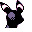

#187
Umbreon
Dark
On the night of a full moon, or when it gets excited, the ring patterns on its body glow yellow
Base stats Total 430
HP95
Attack95
Defense90
Speed70
Special80
Details
- Species
- Moonlight
- Height
- 3'03"
- Weight
- 60.0 lb
- Catch rate
- 45
- Base exp
- 197
- Growth
- Medium Fast
Level-up moves
LevelMoveType
StartTackleNormal
StartTail WhipNormal
StartSand-AttackNormal
Lv 6GrowlNormal
Lv 17Sucker PunchDark
Lv 21Confuse RayGhost
Lv 25BiteDark
Lv 28SwiftNormal
Lv 31CrunchDark
Lv 38Take DownNormal
Evolution
Evolves from Eevee
Where to find
TM / HM
TM04 CrunchTM06 ToxicTM07 Shadow BallTM08 Body SlamTM09 Take DownTM10 Double-EdgeTM15 Hyper BeamTM28 DigTM29 PsychicTM31 MimicTM32 Double TeamTM33 ReflectTM39 SwiftTM42 Dream EaterTM44 RestTM45 Thunder WaveTM50 SubstituteHM01 CutHM05 Flash